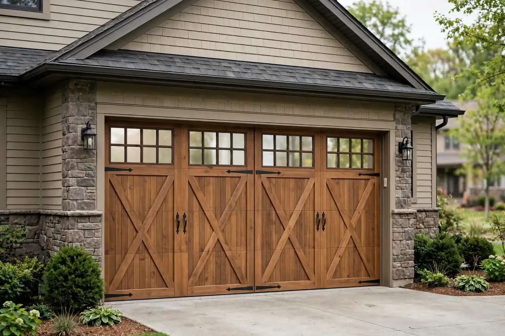
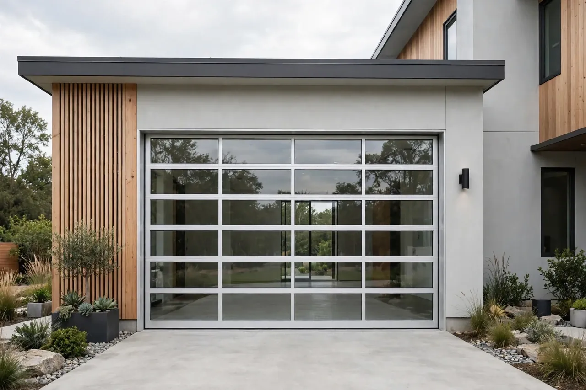

Your local team · Sheridan Lake View
Garage Doors in Sheridan Lake View, IL for Mixed-Era Homes
Sheridan Lake View is a Bartlett plat in the eastern grid of Zion, west of Sheridan Road and just north of Route 173, with a wide build range that reflects infill and rebuilding alongside older stock. Parcel examples span 1945 to 2001, so no single build era is stated for this plat. The garage pattern is mixed: 1980s-1990s infill likely has attached one- to two-car garages, while 1940s stock likely has detached garages. Milwaukee Garage Doors Inc handles repair, installation, springs, openers, panels, off-track work, and maintenance in Sheridan Lake View. Call (224) 842-7761. The business is open 24 hours, every day.
Local knowledge
Sheridan Lake View: a Bartlett Plat With Infill and Older Stock
Sheridan Lake View is a Bartlett plat west of Sheridan Road, just north of Route 173, in the eastern grid of Zion. Its name appears in variants across the records: Bartletts Sheridan Lake View in MLS listings, and F.H. Bartletts Sheridan Lake View in parcel records, with further property variants in the legal descriptions. This page uses Sheridan Lake View throughout. Parcel data counts 45 properties, and the MLS range gives homes of 1,152 to 1,911 square feet, built 1965-2001. Parcel examples tell a wider story: Thompson Avenue homes from 1992, Elizabeth Avenue homes from 1986-1987 and from 1945, and a Wilson Court home from 1999. That spread reflects infill and rebuilding alongside older stock, so no single build era is claimed. The garage pattern follows the same mix: 1980s-1990s infill likely attached, 1940s stock likely detached.

Services available in Sheridan Lake View
Garage Door Services Available Across Sheridan Lake View
The eight services below cover garage door work for Sheridan Lake View homes across the plat's wide era range. An infill home from the 1990s and a home from the 1940s need different assessments, and the notes below keep that mix in view. Each service page explains the work in full.
01
Garage Door Repair
Sheridan Lake View doors span 1945 to 2001 in parcel examples, so repair work here ranges from older detached doors to 1990s attached doors. With infill and older stock side by side, the fault is traced through the springs, cables, rollers, tracks, and opener on the individual door, since no single era describes the plat.
View service 02Garage Door Installation & Replacement
With infill and older stock side by side, Sheridan Lake View doors are assessed individually, since a single era does not describe the plat. Doors are assessed individually here, so the opening is measured as built, including header, jambs, and clearances, before a replacement is considered. Panel style, insulation, and opener pairing follow from the opening and the home, whether the door belongs to a 1940s detached garage or a 1980s to 1990s infill attached garage.
View service 03Garage Door Spring Replacement
Springs in Sheridan Lake View are judged per home, because a 1940s detached door and a 1980s to 1990s infill attached door in the same plat are at different life stages. Parcel examples span 1945 to 2001, so torsion and extension springs are identified on the door as found and their condition is judged by inspection, not by the plat’s name. When a spring breaks, the door becomes hard to lift by hand, and the opener is left off until the lifting system has been checked.
View service 04Garage Door Opener Repair & Installation
Openers in Sheridan Lake View vary with replacement history and with the mix of infill and older homes, so opener age is established during the check. A humming, reversing, or unresponsive opener on an infill or an older home is traced to a sensor, gear, limit, or control fault before a new unit is considered. The safety sensors and auto-reverse are checked during the same visit.
View service 05Garage Door Panel Replacement
Mixed attached and detached garages in Sheridan Lake View mean a damaged section may be on a rear detached door or a street-facing attached door. Damage confined to one panel suits single-section replacement where the remaining sections, hinges, and tracks are still sound, on rear detached doors and street-facing attached doors alike. The replacement section must match the door in size and profile, judged against the individual door, since the plat’s infill mix means no single pattern applies.
View service 06Garage Door Off-Track, Cable & Roller Repair
Attached and detached doors alike in Sheridan Lake View depend on aligned tracks and sound cables and rollers, and uneven travel is checked the same way for both. Cables, rollers, and tracks work as one system, so a fraying cable, a seizing roller, or a bending track can pull the door out of line on an older detached door or a newer infill door alike. The full travel path is checked before the door is run again, with alignment and spring balance looked at together.
View service 07Garage Door Maintenance & Tune-Up
Maintenance in Sheridan Lake View is judged per home, because 1940s detached doors and 1980s to 1990s infill attached doors in the same plat are at different life stages across the 1945 to 2001 parcel span. A tune-up covers hardware condition, balance, seal condition, and the safety sensors and auto-reverse, with the emphasis set by the individual door’s age and garage type. Wear found early on either kind of door is easier to deal with than a door that has stopped.
View service 08Emergency Garage Door Repair
A stuck-open garage door in Sheridan Lake View, attached or detached, is a call to make rather than a problem to force, at any hour. The phone line is open 24 hours, every day: (224) 842-7761. Attached or detached, a stuck door is left where it is, and the call describes whether it is open, closed, or hanging unevenly.
View serviceHow the work is approached
How We Run Garage Door Work in Sheridan Lake View
Work in Sheridan Lake View starts with the individual home: infill or older stock, attached or detached. The checking sequence is the same for every visit, but what it finds depends on which part of the plat's wide range the home belongs to. The notes below describe the checks without claims about timing or stock.
Infill or older stock, check the same way
A 1990s infill home and a 1940s home have different doors, but the check covers the same ground: opening, header, jambs, springs, cables, tracks, and opener, for attached and detached garages alike.
Judging age from the door itself
Parcel examples span 1945 to 2001, and replacement history varies. The door's own condition and the opener's age are established during the check, rather than assumed from the home's build year.
Tensioned springs and cables
Springs and cables carry the door's weight under tension, on infill doors and older doors alike in Sheridan Lake View. A broken spring makes the door heavy, and spring and cable work is left to a technician.
Opener controls, sensors, and auto-reverse
For Sheridan Lake View openers, the motor, controls, sensors, and auto-reverse are examined as one system. An older opener may lack features found on newer units, and the safety features are tested either way.
Rollers, hinges, tracks, and seal contact
In Sheridan Lake View, rollers, hinges, tracks, and seals wear with cycles and winters on both garage types. The full travel path and the seal's contact with the floor are part of the check.
Name variants, one page
The plat appears as Bartletts Sheridan Lake View and F.H. Bartletts Sheridan Lake View in different records. This page uses Sheridan Lake View consistently, so the variants do not become separate areas.
Common local problems
Common Garage Door Problems in Sheridan Lake View
Infill and older stock side by side
Doors from 1945 to 2001 in one plat
Mixed-era openers
Detached and attached garage topics together
Warning signs
Signs Your Sheridan Lake View Garage Door Needs Attention
A bang, then a door that will not lift
Whether the home is 1940s stock or 1990s infill, a loud bang and a door that will not lift usually mean a broken spring. The door becomes heavy at once. Stop using it and call (224) 842-7761.
Reversing with a clear path
A Sheridan Lake View door that reverses with nothing in the way usually has a sensor or force-setting fault. Dirty or misaligned sensors and a drifting force setting are both checked, along with the auto-reverse.
New noise as the door travels
Worn rollers, tired hinges, and tracks out of alignment cause most new noise. On the oldest doors here, that wear may be advanced and may involve more than one part.
Crooked or binding travel
When a door travels crooked or binds, a frayed cable or a one-sided spring fault is the usual cause. The door is not forced, and the cables, drums, springs, and track alignment are checked as one system.
A door that sticks, with cold air and water
Around a door of any era in this plat, hardened seals admit cold air and meltwater, and a frozen threshold can stick the door to the floor. The seal contact with the floor is part of the check.
Area context
What Shapes Garage Door Work in Sheridan Lake View
Sheridan Lake View is defined by its Bartlett plat record, its name variants, and its wide era range. The notes below use that evidence, plus the mixed garage pattern, to explain what garage door work here usually involves.
A Bartlett plat, west of Sheridan Road
Sheridan Lake View is a Bartlett plat, west of Sheridan Road and just north of Route 173, in the eastern grid. Parcel data counts 45 properties under the Sheridan Lake View name.
Name variants noted
The plat appears as Bartletts Sheridan Lake View in MLS records and as F.H. Bartletts Sheridan Lake View in parcel records. This page uses Sheridan Lake View consistently and notes the variants.
Parcel examples span 1945-2001
Thompson Avenue examples date to 1992, Elizabeth Avenue examples to 1986-1987 and 1945, and a Wilson Court example to 1999. The wide range reflects infill and rebuilding alongside older stock, so no single build era is stated.
Homes of 1,152 to 1,911 square feet
The MLS range gives homes of 1,152 to 1,911 square feet. Thompson Avenue examples run around 1,048 to 1,232 square feet on 9,583-square-foot lots, and Elizabeth Avenue examples include 1,004 and 1,893 square feet.
Mixed attached and detached garages
The inferred pattern is mixed: 1980s-1990s infill likely has attached one- to two-car garages, while 1940s stock likely has detached garages. No garage-specific evidence was found, so the mix is stated as an inference.
No homeowners association in the records
No homeowners association was evidenced in the records read for Sheridan Lake View. Owners should check their own documents for anything affecting their individual home.
Sheridan Lake View service coverage
Garage Door Help in Sheridan Lake View, Zion, IL
This page covers garage door work for Sheridan Lake View homes in the eastern grid of Zion. The chips name the location anchors and the streets from parcel examples, not a boundary. Milwaukee Garage Doors Inc is based at 2016 Horizon Ct, Zion, IL 60099, and is open 24 hours, every day.
Sheridan RoadRoute 173Thompson AvenueZion, IL 60099
Milwaukee Garage Doors Inc2016 Horizon Ct, Zion, IL 60099, United States
Common work
Garage Door Work Common in Sheridan Lake View
Spring work across a wide era range
Doors from 1945 to 2001 have spring histories that vary widely. The general pattern is spring fatigue found during a check or after a break, handled as tensioned parts by a technician.
Opener, sensor, and control work for infill and older homes
Openers range from older units on 1940s homes to newer units on 1990s infill. The general work checks the motor, drive, controls, sensors, and auto-reverse together, whatever the opener's era.
Hardware, seals, and sections on mixed doors
Roller, hinge, track, and seal wear accumulates over decades on older doors and over fewer years on infill doors. The common work is hardware attention, track alignment, and seal renewal, plus section replacement where damage is confined to one panel.
Notes from local customers
What Customers Say
The crew was proficient and competent, and they made my garage seem better than before.
Premium components were used to rebuild my garage door for reasonably low running cost.
I had a thorough safety check on my garage door, the technician was very detailed.
Plan for the season
How Sheridan Lake View Seasons Affect Your Garage Door
Spring: seals, hardware, and safety tests
Spring checks on Sheridan Lake View doors cover seals, hardware, and a test of the sensors and auto-reverse, whether the home is infill or older stock.
Summer: listening for new noise
In summer, worn rollers and hinges show up as noise on doors across the plat's wide era range. Opener controls and limits can be checked at the same time.
Fall: seals and springs before winter
Before the cold, the seal, springs, cables, and sensor alignment are worth a look on a Sheridan Lake View door, with the oldest doors in the plat checked most closely.
Winter: sticking, ice, and broken springs
Meltwater refreezing at the threshold can stick a Sheridan Lake View door to the floor. Never force a frozen door with the opener, and if a spring snaps, call (224) 842-7761.
Nearby service areas
Nearby Zion Areas
The areas below are other Zion areas with their own pages, in the eastern grid and the city centre. Sheridan Lake is listed separately, as it is a separate plat, and the other areas share the eastern-grid stock.
Before you hire
Questions to Ask a Garage Door Company in Sheridan Lake View
Do you test the safety reverse and sensors on every visit?
How do you assess a door when the plat has no single build era?
How do I check whether the City of Zion requires a permit for this work?
What details about the door help most when I call?
What changes in the check for a detached garage?
Trust and compliance
Codes and Safety in Zion
Adopted codes in Zion
Zion has adopted the 2021 International Building Code and 2021 International Residential Code, effective January 1, 2025, with local amendments.
State licence position
Illinois does not issue a statewide licence covering garage-door work; the only general building-trade contractor licences issued statewide are for roofing and plumbing. Whether City of Zion contractor registration applies to garage-door contractors was not confirmed — ask the City of Zion Building Department.
Safety sensors and auto-reverse
Federal rules (16 CFR Part 1211, UL 325) require residential automatic garage door operators to have entrapment protection: an inherent reversal system plus a secondary entrapment protection device (such as photoelectric sensors or an edge sensor) or a constant-contact control. Test sensors and auto-reverse regularly.
Battery backup
No Illinois battery-backup mandate for garage door openers was found. Battery backup is an opener feature to discuss, not a requirement stated here.
Permits: ask the City first
Whether a City of Zion permit is required for garage-door work, and any fee, was not confirmed on a City source. Contact the City of Zion Building Department, 2828 Sheridan Road, (847) 746-4018, before work begins.
Springs and cables need care
Springs and cables carry high tension. Leave spring and cable work to a technician, and do not remove bottom brackets or fasteners holding spring and cable parts.
Older openings vary
Older garages can have openings that differ from current standard sizes. Measure the opening, headroom and side room before ordering a door so the replacement fits the opening as built.
When to stop using a door
If a spring breaks, a cable frays or the door drops unevenly, stop using the door and keep people clear of it. Call (224) 842-7761 and describe what the door is doing.
The plat appears as Bartletts Sheridan Lake View in MLS records and as F.H. Bartletts Sheridan Lake View in parcel records, with further property variants in legal descriptions. This page uses Sheridan Lake View consistently and notes the variants.
No single build era is stated for this plat. The MLS range is 1965-2001, while parcel examples span 1945 to 2001, reflecting infill and rebuilding alongside older stock.
No garage-specific evidence was found. The inferred pattern is mixed: 1980s-1990s infill likely has attached one- to two-car garages, while 1940s stock likely has detached garages.
Whether a City of Zion permit is required for garage-door work, and any fee, was not confirmed on a City source. Contact the City of Zion Building Department, 2828 Sheridan Road, (847) 746-4018, before work begins.
Stop using the door and do not force it with the opener, especially after a loud bang, which often means a broken spring. When you call (224) 842-7761, mention whether the Sheridan Lake View garage is detached or attached and roughly how old the home is. The business is open 24 hours, every day.
Need garage door help?
Need Garage Door Help in Sheridan Lake View?
If your Sheridan Lake View garage door is stuck, noisy, reversing, or off its track, call and describe what it is doing, including whether the garage is detached or attached and roughly how old the home is. The plat spans 1945 to 2001, so that context helps frame the check. Milwaukee Garage Doors Inc is open 24 hours, every day, at (224) 842-7761.
Start with the basics
Call Milwaukee Garage Doors Inc
Call (224) 842-7761 for garage door repair, installation, springs, openers, and maintenance in Sheridan Lake View and across Zion. Milwaukee Garage Doors Inc is open 24 hours, every day. Tell us what the door is doing, and whether it is stuck open, stuck closed, off its track, or making a new noise.
CALL(224) 842-7761
HOURSOpen 24 hours, every day